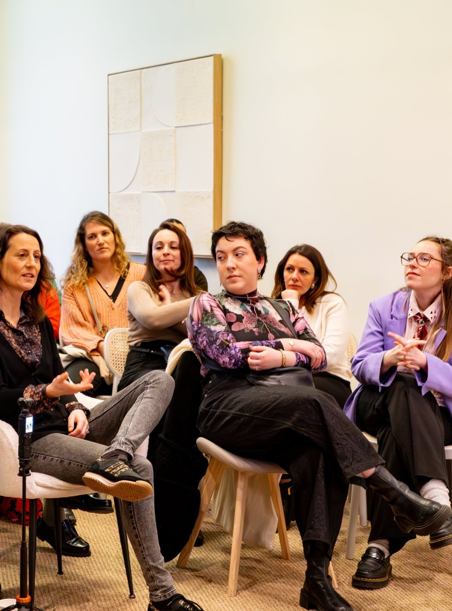

Présente !
Se connecter
le parcours de
Personne ne peut faire le chemin à ta place.
Mais on peut t'aider à le tracer.
Commencer le questionnaire Un quart d'heure. Tu peux t'arrêter et reprendre.Ouvrir mes comptes sans tremblerAnnoncer mon prix, puis me taireDire non sans me justifierNe plus attendre qu'on m'autoriseToi, dans trois mois
Un chemin, par exemple
Trois mois, une semaine après l'autre.
Ce qu'on ne nous apprend pas à l'école : l'argent, la voix, les liens, le corps. Un chemin personnel, pas un cours de plus.
1
Tu répondsUn questionnaire d'un quart d'heure, avec tes mots. Pas de cases à cocher pour te résumer.

2
Tu reçois ton cheminTrois quêtes et trois mondes, choisis pour toi, sur trois mois.
3
Tu avancesChaque semaine : écouter, écrire, puis oser un geste dans ta vraie vie.

On passe 15 ans à l'école à apprendre à répondre.
Personne ne nous apprend à questionner.
Une école pour les femmes. Comprendre le monde, reprendre sa vie.
Commencer le questionnaireSept quêtes, en vidéo.
Chacune portée par une intervenante. Ton chemin en prend trois.
- L'Argent
- La Voix
- Le Travail
- Les Émotions
- Le Corps
- Les Liens
- La Création

Et des mondes, en podcast.
Histoire, au prisme du féminismeD'où l'on vient, pour choisir où l'on va.
Philosophie pratiqueDes idées qui servent un mardi soir.
Attention et réseauxCe que l'écran fait de nos journées.
75 €le chemin
de trois mois
de trois mois
Ou trois fois 25 €. Pas d'abonnement. Une carte postale à offrir est incluse.
Commencer le questionnaire